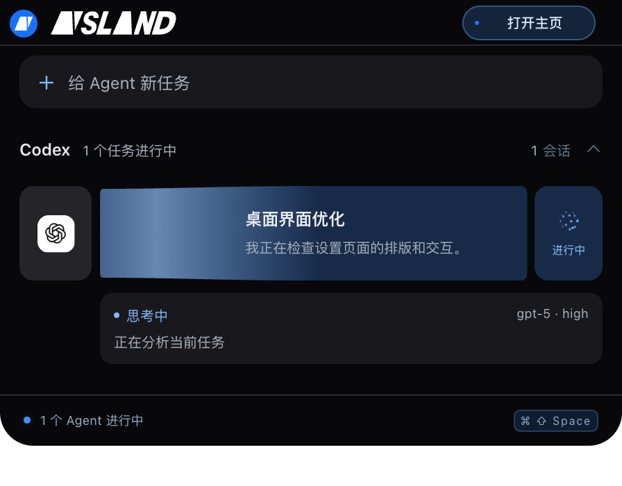
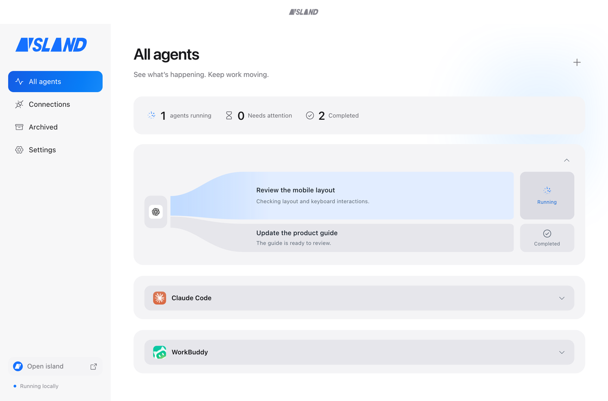
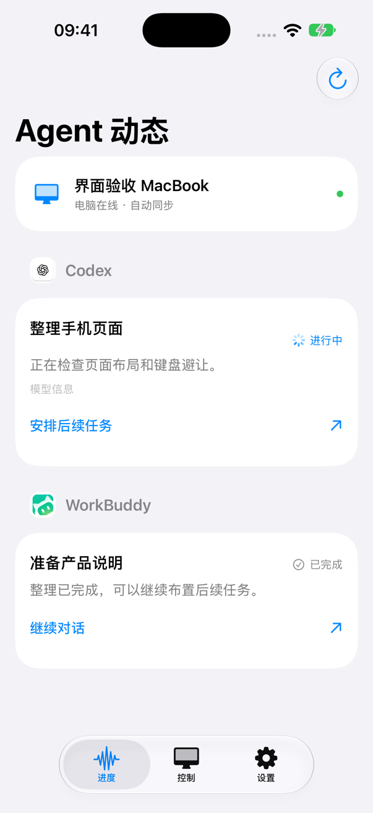
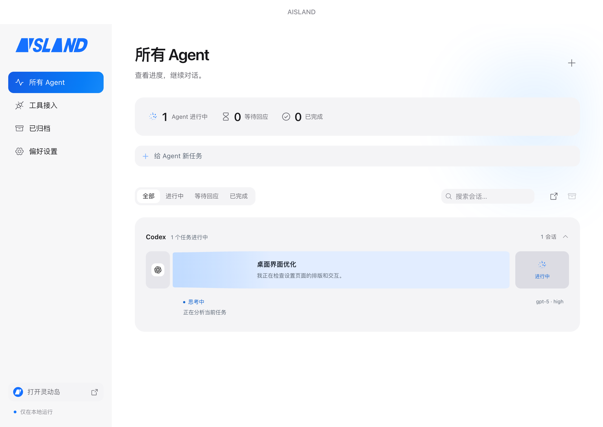

01 / DESKTOP
抬头，就在这里。
查看进度，在支持的会话里接着聊。



ONE ISLAND. ALL YOUR AGENTS.
接入指南LESS SWITCHING. MORE DOING.
查看进度，在支持的会话里接着聊。

iOS 实际界面 · 示例任务
YOUR WORK, IN VIEW

每个 Agent 一个位置，展开查看会话分支。
软件实际界面 · 示例任务
下载 AISLAND，让 Agent 上岛。
Apple Silicon · M 系列
0.3.38 / DMG / 127.3 MiBx64 安装程序
0.3.38 / EXE / 125.0 MiB